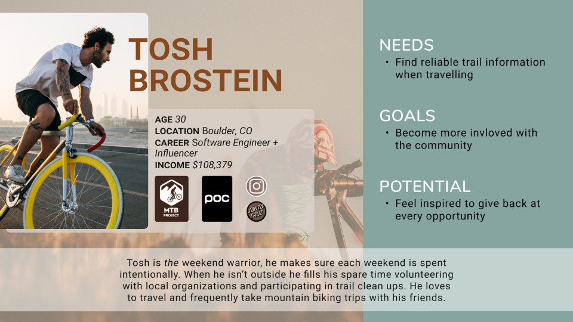

Before we could build a great non-profit site, the first step was to understand who we were designing for. We began our proto-persona by interacting with the original SMT site and gave the proto-persona a demographic profile based on secondary research.

To begin user research, we cast a wide net and tried to gather as much info as possible. Using a google survey we found useful info about trail users that we could utilize for one-on-one interviews. One very important takeaway from surveying was that users overwhelmingly wanted to give back with both time and money, but often didn’t because they felt disconnected or intimidated
Being able to ask more nuanced questions, then organizing data through Empathy Mapping, cross-referenced with the existing site, it was clear the website needed mission transparency front and center, and that users would like to see a central focus on sustainability.
Finally, we could turn our proto-persona from a vague caricature of a user into a believable person with needs, goals, and potential for gains.